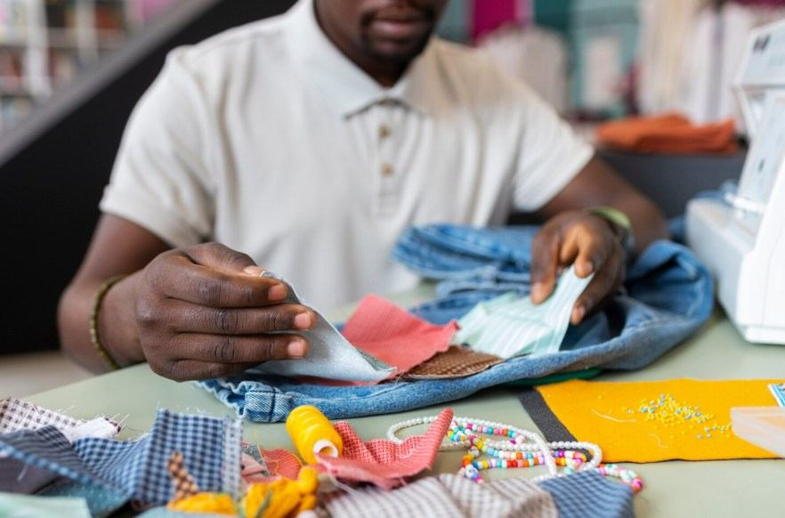
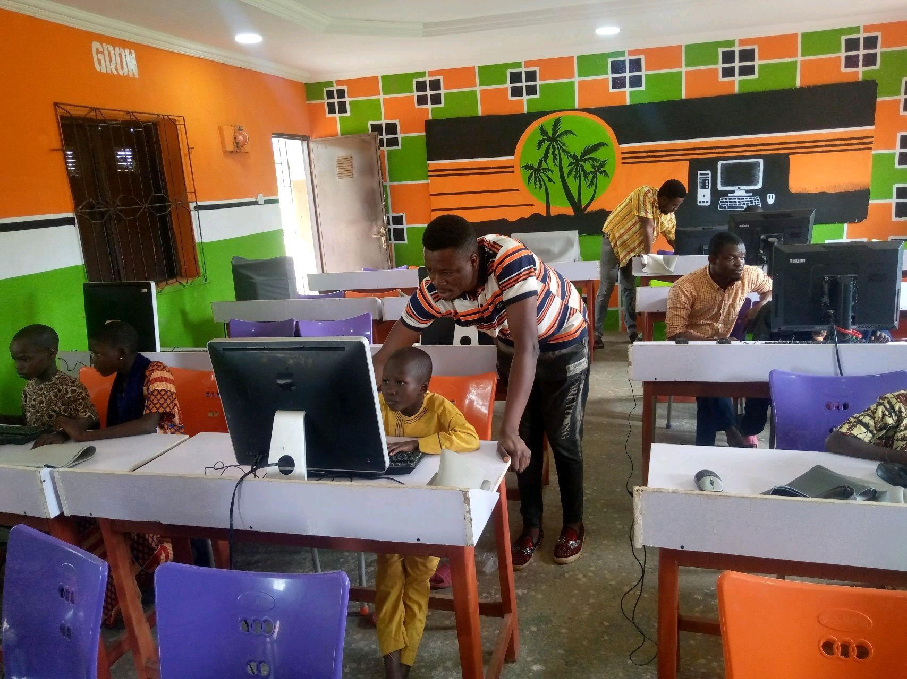

Our Journey in Pictures
Witness the tangible impact of our programs across communities. Every image tells a story of hope, resilience, and collaborative progress.

Field Work
Community Outreach

Workshops
Skills Training Session

Events
Annual Village Assembly

Field Work
Waste-to-Value Initiative

Workshops
Strategic Planning

Events
Civic Engagement Session

Events
Peacebuilding Dialogue

Workshops
Girls ICT Learning

Field Work
Community Waste Collection

play_arrow
Documentary
Voices from the Ground: Skills, Dignity, and Resilience
Experience how women, girls, youth, IDPs, and persons with disabilities are using green skills, reusable products, and community support to build cleaner and more resilient lives.
Watch Full Story arrow_forward